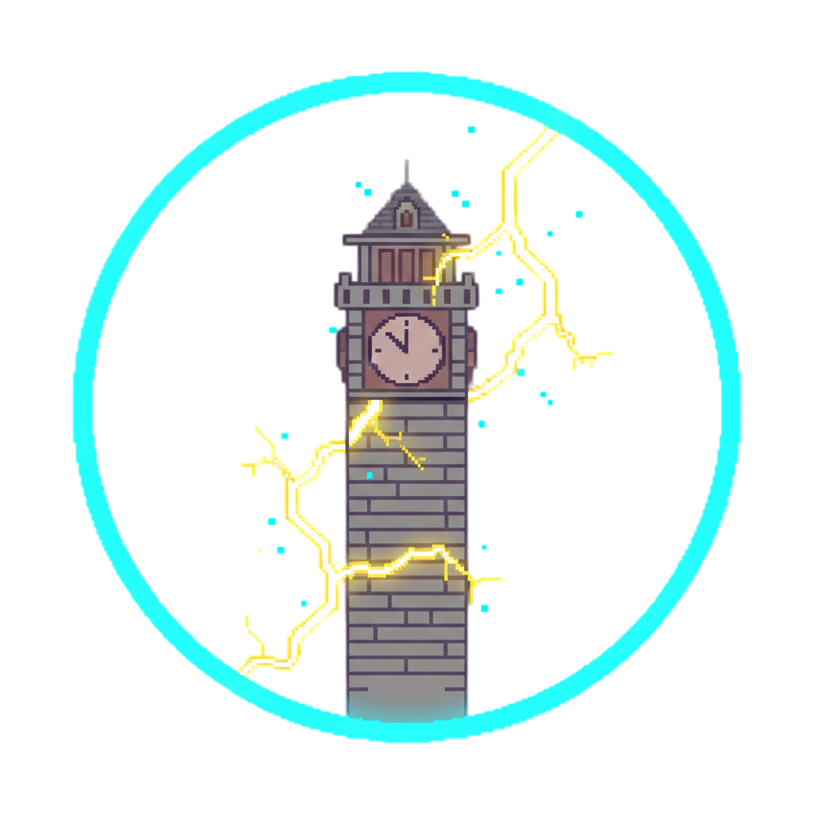

Git Terminal
git $
Git Timeline
Visualizador de Líneas Temporales
Aquí verás todas las ramas, commits y fusiones de tu repositorio
Git en forma de árbol visual. Ejecuta "git init" para comenzar.
Branch:
Sin repositorio
Mission Objective
Inicializa la máquina del tiempo
Level Context
🎬 Back to the Future II
(1989)
📅 Año: 1985A (Distopía)
🎥 Director: Robert Zemeckis
Biff del futuro entrega un almanaque deportivo a su yo del pasado, creando una línea temporal alternativa donde controla Hill Valley. Debes usar git merge para entender y corregir la historia corrupta.
